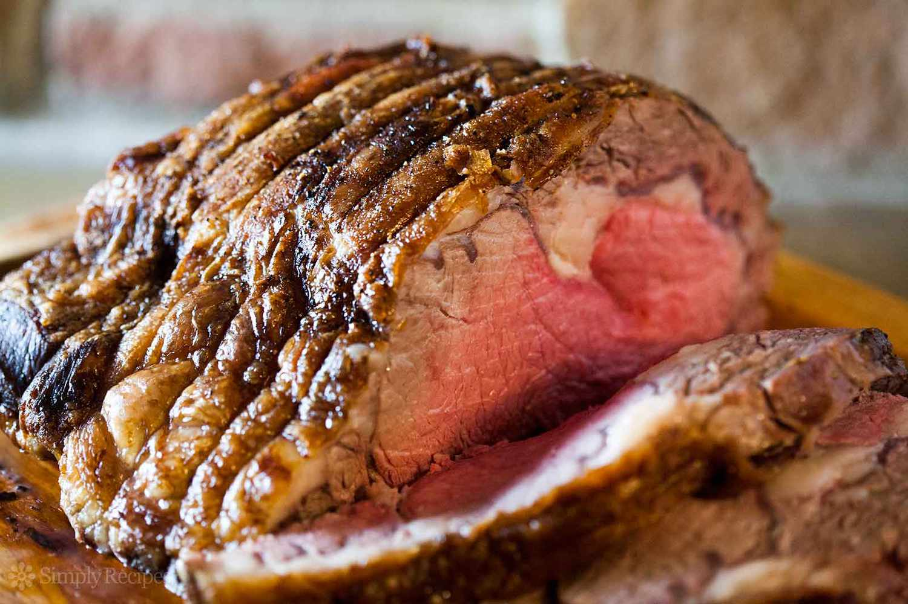

Home

Description
If you've ever carved into a prime rib at a big holiday meal expecting a juicy,
perfectly pink interior only to discover a dry, overcooked roast,
this recipe is for you.
Ingredients
Prime Rib Roast
Unsalted Butter
Ground Black Pepper
Herbes de Provence
Kosher Salt
Steps
- Place prime rib roast on a plate and bring to room temperature, 2 to 4 hours.
- Preheat the oven to 500 degrees F (260 degrees C).
- Combine butter, pepper, and herbes de Provence in a bowl; mix until well blended. Spread butter mixture evenly over entire roast. Season roast generously with kosher salt.
- Roast the 4-pound roast in the preheated oven for 20 minutes. (If your roast is larger or smaller than 4 pounds, multiply the exact weight times 5 minutes.)
- Turn the oven off and, leaving the roast in the oven with the door closed, let the roast sit in the oven for 2 hours.
- Remove roast from the oven, slice, and serve.
Return to Top